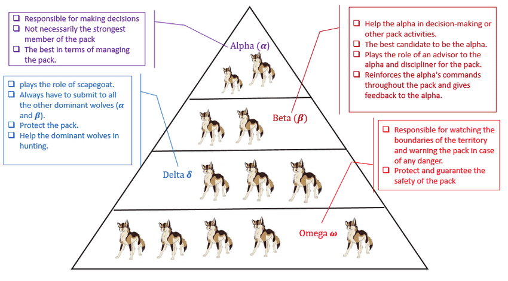
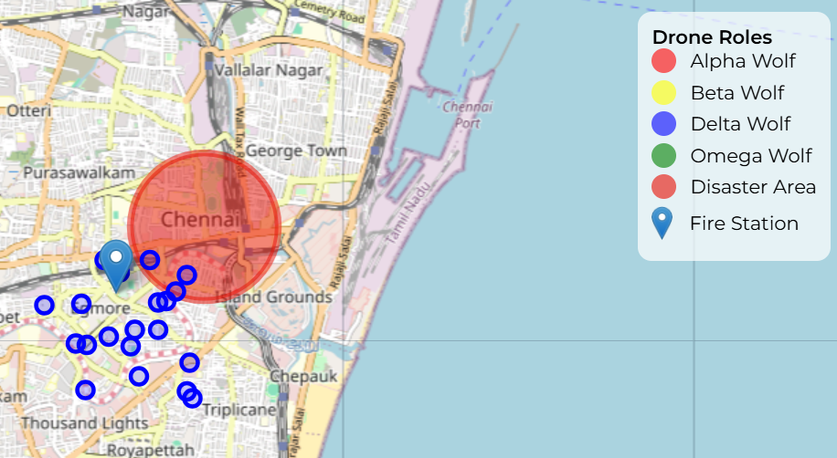
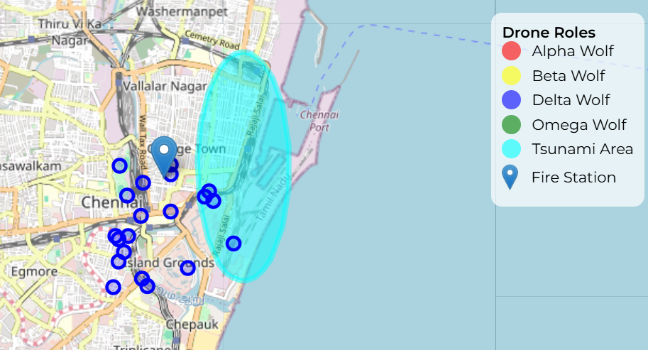
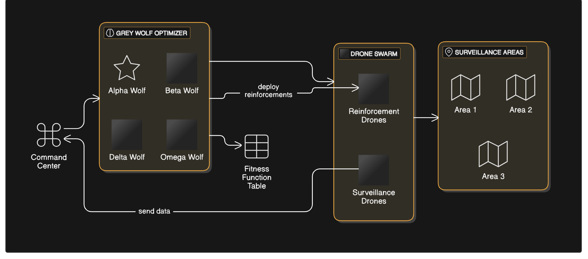
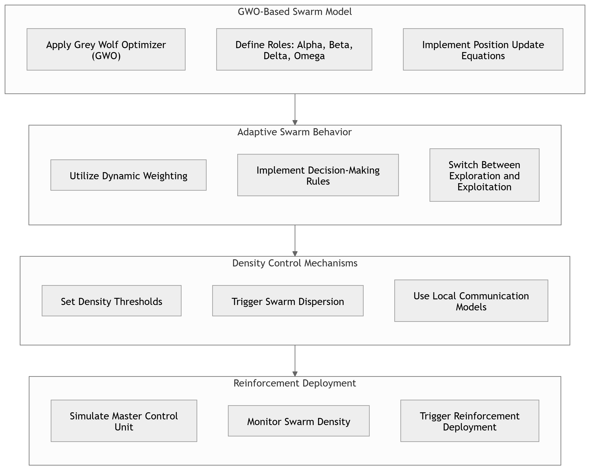

A bio-inspired approach to disaster management using optimization techniques.
Start Simulation
The algorithm simulates the hunting process where wolves cooperate to encircle and hunt prey, representing the search for optimal solutions. Wolves in the algorithm update their positions based on the positions of the Alpha, Beta, and Delta wolves (the best solutions found), moving closer to the optimal solution.
Grey Wolf Optimization efficiently explores the search space using a hierarchical structure and cooperative hunting behavior.
The algorithm is easy to implement, with minimal parameters and powerful optimization results for various applications.
It can be applied to many fields like engineering design, feature selection, machine learning, and control systems.
GWO excels at escaping local optima and performing a global search to find the best possible solution.

Use GWO to optimize earthquake emergency response plans, ensuring efficient resource distribution and minimizing damage during seismic events.
Try Earthquake Simulation Now
Experience the application of GWO for tsunami disaster management. This simulation optimizes evacuation routes and resource allocation for better response to a tsunami event.
Try Tsunami Simulation Now

Guide and Mentor
Developer
Developer